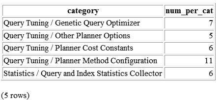
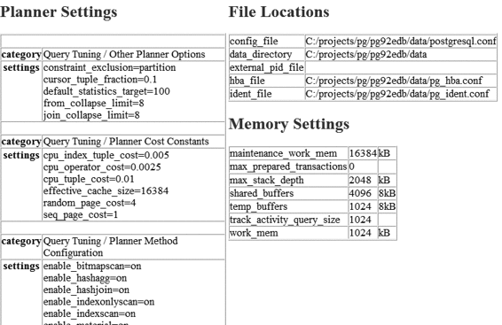

你也许会觉得难以置信，但 psql 的确能够制作简单的 HTML 报表。请执行以下命令并查看输出的 HTML 报表，应该是类似图 3-1 所展示的样子。
psql -d postgresql_book -H -c
"SELECT category, count(*) As num_per_cat
FROM pg_settings
WHERE category LIKE '%Query%'
GROUP BY category
ORDER BY category;" -o test.html

图 3-1：简单 HTML 报表
上面的报表看起来还算凑合，但这仅仅是输出了一个 HTML 表格，还称不上是一个完全符合格式要求的 HTML 文档。为了让本报表的内容更丰富一些，我们需要写一个脚本来作为辅助，内容见示例 3-11。
示例 3-11：编写 settings_report.psql 文件来设置报表内容
\o settings_report.html ➊
\T 'cellspacing=0 cellpadding=0' ➋
\qecho '<html><head><style>H2{color:maroon}</style>' ➌
\qecho '<title>PostgreSQL Settings</title></head><body>'
\qecho '<table><tr valign=''top''><td><h2>Planner Settings</h2>'
\x on ➍
\t on ➎
\pset format html ➏
SELECT category, string_agg(name || '=' || setting, E'\n' ORDER BY name) As settings ➐
FROM pg_settings
WHERE category LIKE '%Planner%'
GROUP BY category
ORDER BY category;
\H
\qecho '</td><td><h2>File Locations</h2>'
\x off ➑
\t on
\pset format html
SELECT name, setting FROM pg_settings WHERE category = 'File Locations' ORDER BY name;
\qecho '<h2>Memory Settings</h2>'
SELECT name, setting, unit FROM pg_settings WHERE category ILIKE '%memory%' ORDER BY name;
\qecho '</td></tr></table>'
\qecho '</body></html>'
\o
➊ 指定查询结果输出到一个文件中。
➋ HTML 表格的输出格式设置。
➌ 添加一些附加的 HTML 代码。
➍ 打开记录输出的展开模式。即重复每一个记录的列标题，并将每一个记录的每一列作为一个单独的记录输出。
➎ 设置“是否仅输出记录”开关。如果此开关是打开的，则会忽略列标题和行计数。
➏ 指定按 HTML 表格格式输出结果。
➐ string_agg() 是 PostgreSQL 9.0 版引入的一个函数，可以将聚合运算中被划为同组的字符串值合并为单个字符串。
➑ 关闭记录输出的展开模式，这样第二个和第三个查询结果在报表上的输出格式应该是每条记录仅占一行。
示例 3-11 演示了通过灵活使用 SQL 和 psql 命令可以创建出一个内容丰富的综合性分层报表。要运行上面示例中的脚本有两个方法：可以使用 psql 以交互方式连接并执行 \i settings_report.psql，也可以在操作系统的命令行界面上运行 psql -f settings_report.psql。settings_report.html 生成的输出结果如图 3-2 所示。

图 3-2：复杂 HTML 报表
通过以上脚本，可以实现将多个查询的输出结果整合到一个报表中，如果要定时生成此报表，请使用 pgAgent 或者 crontab。